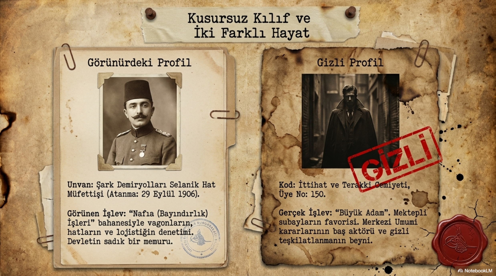
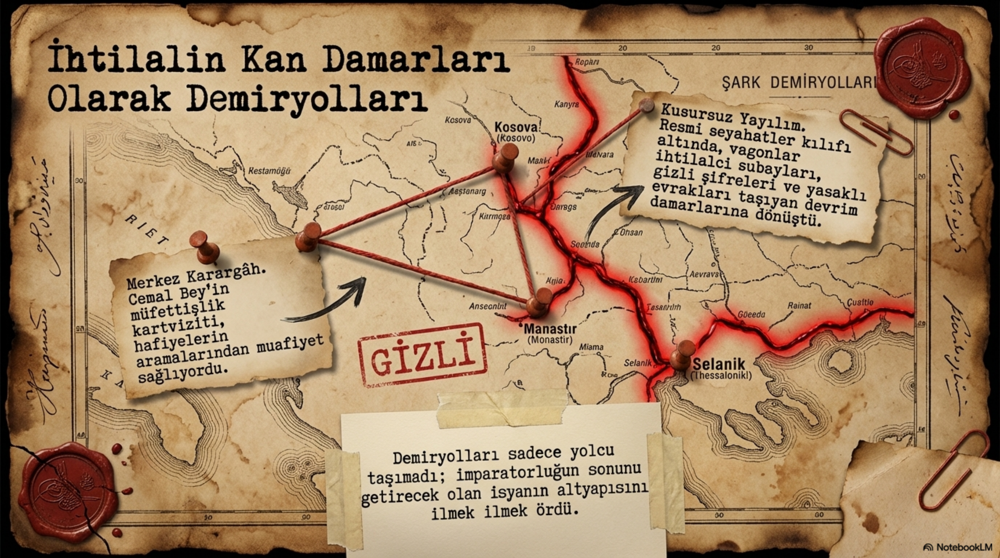
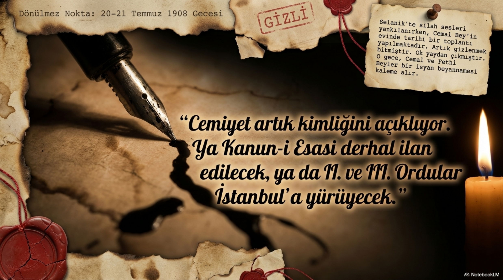
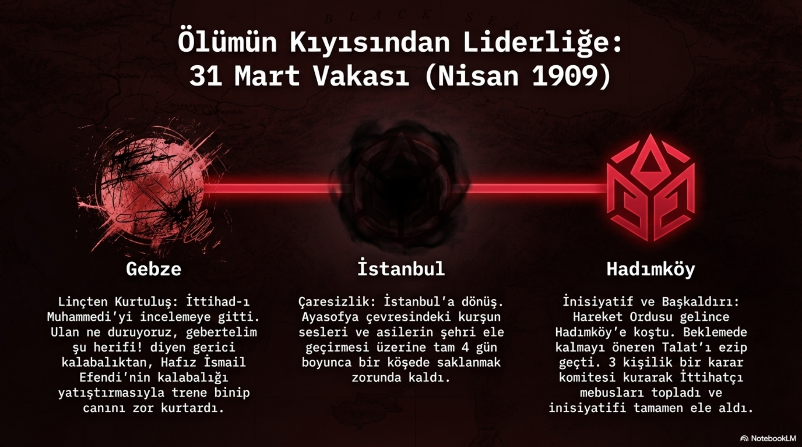
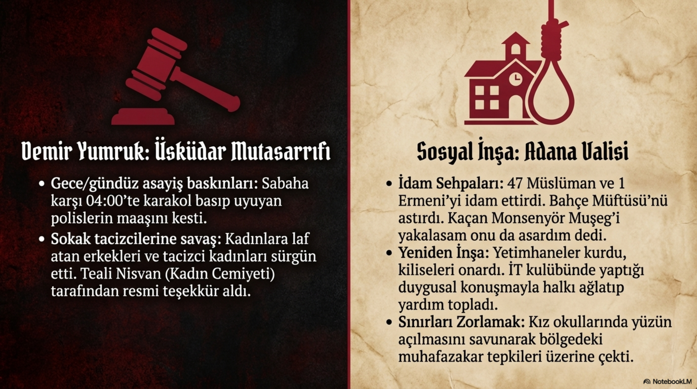
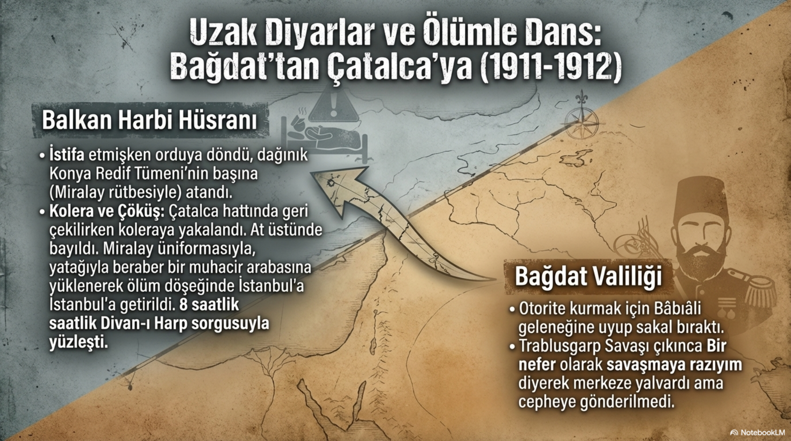
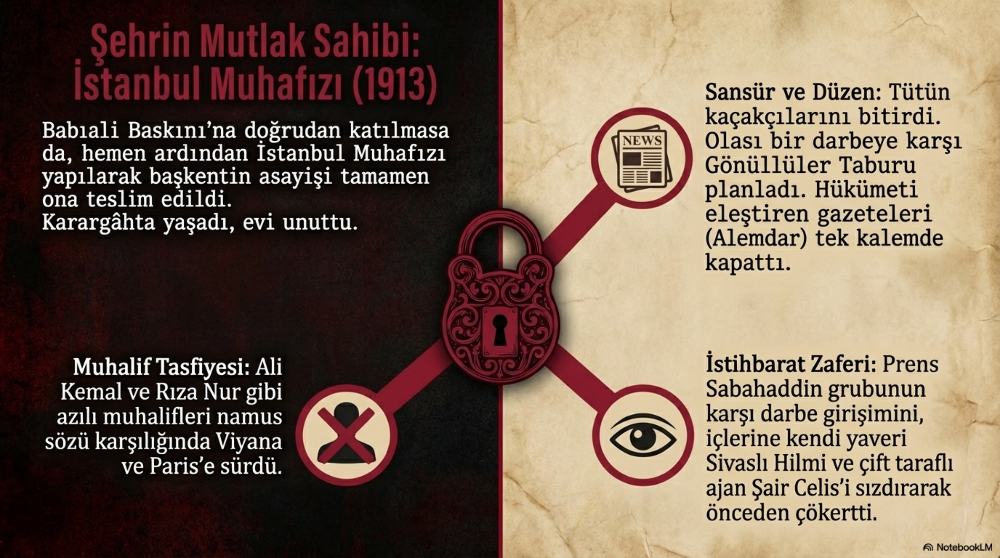
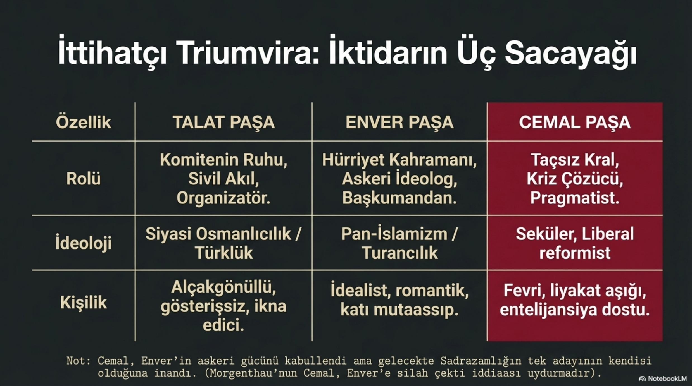
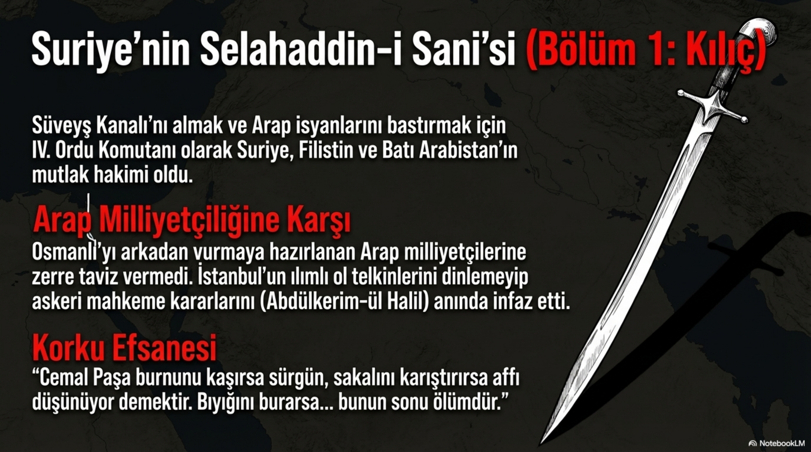
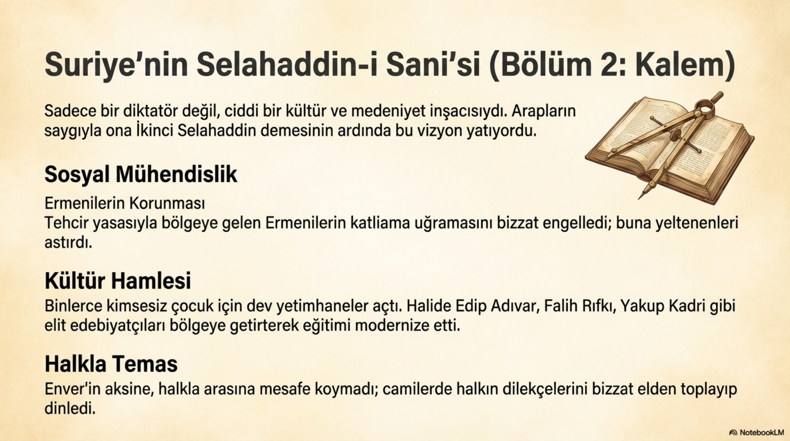

Bölüm 01
Midilli’den Kuleli’ye: Asker Aileden Kurmay Subaya
Ahmed Cemal, 6 Mayıs 1872’de Askerî Eczacı Mehmet Nesib Efendi ile Binnaz Hanım’ın çocuğu olarak Midilli’de dünyaya geldi. Nüfusa İstanbul’da kaydedildi; sicilinde memleketi Çengelköy olarak geçti. Bu küçük kayıt meselesi bile Cemal’in hayatındaki iki dünyayı sezdirir: Ege adası, İstanbul, askerî aile, imparatorluk bürokrasisi ve taşra görevi aynı çizgide birleşir. Eğitimine İstanbul’da başladı, aile geleneğinin de etkisiyle askerliği seçti. Kuleli Askerî İdadisi’ni bitirdi, 1890’da Harbiye’ye girdi, 1893’te teğmen olarak mezun oldu ve kurmay sınıfına ayrıldı. 1895’te Kurmay Yüzbaşı olarak orduya katıldığında artık sıradan bir subay değil, devletin seçkin askerî aklının parçasıydı.
Cemal’in az konuşulan taraflarından biri entelektüel merakıdır. Kırklareli’nde görev yaptığı yıllarda Plevne Müdafaası üzerine bir kitap yayımladı. Bu ayrıntı önemlidir. Çünkü Cemal’i yalnızca sert emirler veren bir komutan gibi okumak eksik kalır. O, askerlik tarihine, millî hafızaya ve düzen fikrine meraklı bir subaydı. Fakat ilerleyen yıllarda valilik, muhafızlık, nazırlık ve cephe komutanlığı gibi görevler bu entelektüel tarafın üstünü örttü.
Kırklareli yıllarında ilk evliliğini yaptı; fakat eşini ve çocuğunu doğum sırasında kaybetti. Bu ağır kayıp sağlığını ve ruh halini sarstı. Kırklareli’nde kalmak istemedi ve tayinini istedi. 1898’de III. Ordu emrine verilerek Selanik’e gönderildi. Selanik’e gitmeden önce Serez’de Seniha Hanım’la evlendi; bu evlilik yirmi dört yıl sürecek ve beş çocukları olacaktı. Cemal’in asıl tarih sahnesine çıkışı da Selanik’le başladı.
Bölüm 02
Selanik: Demiryolu, Teşkilat ve İki Hayat
Selanik, Cemal için yalnızca yeni bir görev yeri değildi; İttihatçılığın içine girdiği büyük kavşaktı. Bölgede Bulgar, Rum, Sırp ve başka unsurlar komiteler kuruyor, çeteler çalışıyor, konsolosluklar gölge gibi dolaşıyor, mektepli ve alaylı subay çekişmesi orduyu içten geriyordu. Türkler adına güçlü ve disiplinli bir gizli örgüt bulunmaması Cemal’i rahatsız eden başlıklardan biriydi. 1905’te Kurmay Binbaşı oldu, çete takibiyle ilgilendi, ardından Şark Demiryolları Selanik Hat Müfettişliği gibi görünürde teknik ama gerçekte çok kıymetli bir görev üstlendi.

Demiryolu görevi ona seyahat imkanı verdi. Selanik’ten Manastır’a, Kosova’ya ve çevre bölgelere gidebiliyor, güvenilir isimlerle temas kurabiliyor, Cemiyetin ağını büyütmeye katkı sunabiliyordu. Cemal’in İttihatçılığı burada şekillendi: O, Enver gibi dağa çıkan sembol kahraman değil; Talat gibi posta hattının sinirlerini tutan görünmez siyasi organizatör de değil. Cemal daha çok idare, bağlantı, insan seçme, görev verme ve bölgeyi elde tutma adamıydı.
1906’da Osmanlı Hürriyet Cemiyeti’ne katıldı ve Selanik Şubesi’nin 150 numaralı üyesi oldu. Cemiyete girdiği günlerde henüz bütün mekanizmayı çok iyi tanıdığı söylenemez. Hatta Manastır’a gönderildiğinde beklenen katkıyı ilk anda veremedi. Fakat bu başlangıç pürüzü kısa sürede aşıldı. Cemal, Selanik merkezli yapının önemli isimlerinden biri haline geldi. Talat’ın evindeki toplantılara katıldı, mektepli subaylar arasında sevildi, yaşı ve rütbesi nedeniyle genç subayların gözünde ağırlık kazandı. Yonyo Gazinosu’nda onun için “büyük adam” denmesi boşuna değildi.

Bölüm 03
Cemal’in Evi: İhtilalin Toplantı Odası
20-21 Temmuz 1908 gecesi Cemal’in evi tarihî bir toplantıya sahne oldu. Talat, İsmail Canbulat, Rahmi, Mithat Şükrü, Manyasızade Refik, Fethi ve diğer isimlerle birlikte Cemal de oradaydı. Cemiyet artık kimliğini açıklamaya, milleti istibdattan kurtarmak için açıktan mücadele edeceğini duyurmaya karar verdi. Cemal ve Fethi bir beyanname hazırladı. Bu beyanname yalnızca bir siyasi metin değildi; Abdülhamid idaresine verilmiş sert bir ültimatomdu. Meclis yeniden açılacak, Kanun-i Esasi yürürlüğe girecek, aksi halde II. ve III. Ordu üzerinden İstanbul’a müdahale ihtimali masada duracaktı.

23 Temmuz 1908’de Meşrutiyet yeniden ilan edildiğinde Cemal’in evinde sevinç vardı. Fakat Cemal, eşinin “artık korkular bitti” duygusuna karşı çok daha karanlık bir öngörüyle bakıyordu. Asıl felaketlerin, harplerin, isyanların, suikastların ve ölüm tehlikelerinin bundan sonra başlayacağını düşünüyordu. Bu cümle Cemal’i anlamak için mükemmel bir kapıdır. O, hürriyet sarhoşluğuyla kendini kaybedenlerden değildi. Meşrutiyetin kapıyı açtığını, ama kapının arkasında temiz bir salon değil, çok sert bir kavga olduğunu görüyordu.
Bölüm 04
31 Mart: Kaçıştan Liderliğe
31 Mart Vakası Cemal için kişisel bir ölüm tehlikesiyle başladı. Gebze civarında hedef alındı, kalabalığın öfkesiyle karşı karşıya kaldı, bir genç araya girmese belki orada öldürülecekti. İstanbul’a geçince isyanın büyüklüğünü gördü ve birkaç gün saklandı. Fakat Hareket Ordusu’nun Hadımköy’e ulaştığını öğrenince yeniden sahaya çıktı. Talat ve Dr. Nâzım’ın da gelişiyle birlikte Cemal’in psikolojisi değişti. Artık daha savaşçı, daha inatçı, daha aktif bir çizgiye geçiyordu.

Cemal’in 31 Mart sırasındaki önemli katkılarından biri, İttihatçıların krizi yalnızca orduya bırakmaması gerektiğini savunmasıydı. Talat daha temkinli davranırken Cemal, Hareket Ordusu karargâhında Cemiyetin karar alabileceği bir mekanizma kurulmasını istedi. Gerekirse İstanbul’daki Meclis’e karşı Hadımköy’de alternatif bir siyasi merkez oluşturmayı bile düşünüyordu. Bu tavır, onun kriz anında beklemekten hoşlanmadığını ve güvenliği yalnızca askerî mesele değil, siyasi organizasyon meselesi olarak gördüğünü gösterir.
Bölüm 05
Üsküdar Mutasarrıfı: Entari Yasağı ve Demir Düzen
19 Mayıs 1909’da Üsküdar Mutasarrıfı oldu. İşte Cemal’in şehir ölçeğinde devlet kurma kabiliyeti burada görünür hale geldi. Göreve başlar başlamaz asayişi, karakolları, polis disiplinini, sokak düzenini ele aldı. Sabaha karşı karakol basıyor, görev yerinde uyuyan polisi cezalandırıyor, kahvehanede oturan memuru yakalıyor, hükümetin sokakta hissedilmesini istiyordu. Birkaç ay içinde Üsküdar’ın çehresinin değiştiği söyleniyordu.

Ama onu İstanbul’da meşhur eden asıl olay entari yasağı oldu. Sokakta gecelik kıyafetiyle dolaşmayı, kahvede entariyle oturmayı genel ahlak ve düzen meselesi olarak gördü. Yasağı koydu, ceza kestirdi, gazetelerin diline düştü. Bugünden bakınca bu olay küçük ve hatta tuhaf görünebilir. Fakat Cemal’in zihninde kıyafet bile devletin ciddiyetiyle ilgilidir. O, modernleşmeyi yalnızca kanun kitabında değil, sokakta, kıyafette, polis disiplininde ve kamusal davranışta görmek isteyen bir idareciydi.
Bölüm 06
Adana: Yıkımın Ardından Sosyal Tamir
1909 Adana Olayları, Cemal’in önüne çok daha ağır bir dosya koydu. Şehirde Müslümanlar ile Ermeniler arasında büyük bir şiddet yaşanmış, binlerce insan hayatını kaybetmiş, evler, kiliseler, okullar yanmış, toplumun iki yakası birbirinden kopmuştu. Bu konu, dönemin kaynaklarında çoğu zaman taraflı ve sert dillerle anlatılır. Burada dikkatli olmak gerekir. Adana, tek cümleyle kapatılacak bir asayiş olayı değil; korku, söylenti, silahlanma, yerel idare zafiyeti, etnik gerilim, karşılıklı şiddet ve büyük insan kaybıyla oluşan ağır bir kırılmadır.
Cemal’in görevi bu yıkımın üzerine geldi. Barınma sorunuyla ilgilendi, yetimhane çalışmalarını başlattı, yakılan okul ve kiliselerin yeniden inşası için tahsisat meselesini ele aldı, yardım komisyonlarını düzenledi. Hem Müslüman hem Ermeni ileri gelenleriyle toplantılar yaptı. Adana İttihat ve Terakki Kulübü’nde yüzlerce kişiye yaptığı konuşmada, halkın yeniden birlikte yaşama mecburiyetini ve hükümetin tutumunu anlattı. Cemal’in burada yalnızca cezalandıran değil, toplumsal tamire çalışan bir idareci olarak da görünmesi önemlidir.
Bununla birlikte Cemal’in sertliği de Adana’da açıkça görüldü. Olaylara karıştığını düşündüğü çok sayıda kişiyi idam ettirdi; suçsuz olduğuna inandığı bazı kişilerin cezalarını hafifletmeye çalıştı. Bu tablo Cemal’in yönetim anlayışını özetler: önce düzen, sonra merhamet; önce devlet otoritesi, sonra sosyal tamir. Seversiniz sevmezsiniz, ama Cemal’in kafasında devlet böyle çalışır.
Bölüm 07
Bağdat: Uzak Diyarların Valisi
1911’de Bağdat Valisi oldu. Bu görev onu imparatorluğun Arap vilayetleriyle daha yakından tanıştırdı. Demiryolunun Bağdat’a uzatılması, Dicle ve Fırat’ta ulaşım, İngilizlerin dikkatle izlediği Basra Körfezi hattı, yerel eşraf, aşiretler ve merkez-taşra ilişkisi Cemal’in önüne açıldı. Bağdat, onun ileride Suriye’de karşılaşacağı meselelerin bir ön hazırlığı gibiydi. Arap meselesini, imar işlerini, merkezî otoritenin taşrada nasıl hissedileceğini burada daha iyi gördü.

Trablusgarp Harbi çıktığında Cemal cepheye gitmek istedi. Arkadaşları İtalyanlara karşı savaşırken Bağdat’ta oturmayı vicdanına sığdıramıyordu. Fakat bu isteği kabul edilmedi. Bu durum onun içinde ukde kaldı. Cemal savaşmak isteyen ama daha çok idareye sürülen bir adamdır. Bu yönüyle Enver’den ayrılır. Enver cepheye koşar ve sahnede parlar; Cemal çoğu zaman düzenin, vilayetin, şehrin ve güvenliğin ağır yükünü taşır.
Bölüm 08
İstanbul Muhafızı: Payitahtın Mutlak Sahibi
23 Ocak 1913 Babıali Baskını’ndan sonra Cemal’in kariyeri başka bir eşiğe geçti. Baskını Talat planladı, Enver sahnede yürüttü; hükümet binasındaki cesetleri toplamak ve İstanbul’un asayişini sağlamak Cemal’e kaldı. Mahmud Şevket Paşa ona İstanbul Muhafızlığı görevini verdi ve payitahtın düzeni için ne gerekiyorsa gecikmeden yapmasını istedi. Cemal artık yalnızca bir vali değil, başkentin güvenlik mimarıydı.

İstanbul Muhafızlığı sırasında sansür, sürgün, muhalif takibi, asayiş, kadınlara yönelik sokak tacizleriyle mücadele ve siyasal denetim iç içe geçti. Bazı kadın cemiyetleri, kadınların sokaktaki güvenliği için ona teşekkür etti. Muhalifler ise onu baskıcı, sert ve sınırsız yetki kullanan bir figür olarak gördü. Gerçek şu ki Cemal İstanbul’da kendini neredeyse bütün ülkenin muhafızı gibi hissetti. Gücünün sınırını zorladı, bu da onu hem etkili hem tehlikeli bir idareci haline getirdi.
Bölüm 09
Üç Sacayağı: Talat, Enver, Cemal
1913 sonrasında İttihat ve Terakki denilince Talat, Enver ve Cemal üçlüsü öne çıktı. Ama bu üçlü aynı karakterin üç kopyası değildir. Talat sivil siyaset ve parti aklıdır. Enver askerî kahramanlık, hız ve büyük ülküdür. Cemal ise idare, güvenlik, pratik çözüm ve düzen kurma iradesidir. Harbiye Nazırlığı için Cemal de ciddi bir adaydı; rütbesi büyüktü, İstanbul’u yönetmişti, siyaset sahasını biliyordu. Fakat Cemiyetin askerî kanadı ve Talat’ın desteği Enver’in yolunu açtı. Cemal Harbiye’ye değil, önce Nafia’ya, sonra Bahriye Nazırlığı’na gitti.

Bu durum Cemal’in hırsını bitirmedi. O, kendisini yalnızca yardımcı bir figür olarak görmüyordu. Enver’in savaş sonunda görevinin biteceğini, Talat’ın parti liderliğine yakışacağını, sadrazamlık için geriye kendisinin kalacağını düşünecek kadar yüksek bir siyasi özgüvene sahipti. Cemal’in “taçsız kral” hissi biraz da buradan gelir. Resmî unvanı ne olursa olsun, bulunduğu yeri kendi iktidar alanına çevirmeyi severdi.
Bölüm 10
Suriye: Kılıç ve Kalem
Birinci Dünya Harbi başlayınca Cemal Paşa IV. Ordu Komutanlığına atandı. Görev alanı Suriye, Filistin ve Batı Arabistan’dı. Enver’in planı, Süveyş Kanalı üzerinden İngilizleri Mısır’da meşgul etmek ve aynı anda Suriye’deki iç güvenliği sağlamaktı. Cemal görevi tereddütsüz kabul etti. İttihatçı kadroda görev reddetme alışkanlığı pek yoktu; görev kutsaldı, zordu, ağırdı ama gidilirdi. Cemal Şam’a gittiğinde kısa sürede bölgenin mutlak hakimi gibi davranmaya başladı.

Kanal Seferleri beklenen başarıyı getirmedi. Asıl ağır başlık ise Arap milliyetçiliğiyle mücadeleydi. Cemal, savaş sırasında cephe gerisinde ayrılıkçı faaliyetlere taviz verilmemesi gerektiğini düşünüyordu. Âliye Divanharbi kararlarıyla Şam ve Beyrut’ta çok sayıda Arap milliyetçisi idam edildi. Bu infazlar Cemal’in Arap dünyasındaki hafızasını derinden belirledi. Bir kesim onu imparatorluğu savunan sert bir paşa olarak gördü; başka bir kesim onu “Seffah” yani kan dökücü olarak hatırladı. Bu başlık, Cemal’in mirasının en ağır tarafıdır.
Fakat Suriye Cemal’i yalnızca kılıçla anlatmak da eksik olur. Bölgede imar faaliyetlerine girişti, eğitim işlerine önem verdi, Halide Edip gibi isimleri bölgeye davet etti, yetimhaneler açtırdı, savaş ve tehcir şartlarında Suriye’ye gelen Ermeni çocuklar ve siviller için koruyucu tedbirler almaya çalıştı. Edebiyatçılarla yakın ilişki kurdu; Falih Rıfkı, Yakup Kadri, Hamdullah Suphi gibi kalemlerle temas etti. Halkın dilekçelerini dinlemeye, camilerde sorunları öğrenmeye, yerel yönetime doğrudan müdahale etmeye önem verdi.
İşte Cemal Paşa’nın zorluğu burada. Aynı adam hem sert infazların siyasi sorumlusudur hem de okul, yetimhane, imar ve kültür hamlesi yapan yöneticidir. Onu yalnızca cellat gibi anlatırsak idareci tarafını kaçırırız; yalnızca reformcu gibi anlatırsak kanlı dosyaları saklamış oluruz. Cemal’i anlamak, bu iki tarafı aynı metinde taşıyabilmeyi gerektirir.

Bölüm 11
Hepimizin Eli Kanlı
Cemal Paşa’nın “hepimizin eli kanlı” sözü, onun İttihatçı kuşağın ağır muhasebesini sezdiğini gösterir. Bu söz bir pişmanlık cümlesi midir, yoksa zor zamanların soğuk kabulü müdür? Belki ikisi de. Cemal sert işler yaptığını biliyordu. Fakat kendisini şartların gereğini yapan bir devlet adamı olarak görüyordu. Onun dünyasında imparatorluk dağılırken yumuşak kalmak lüks, kararsızlık tehlike, gevşeklik ihanete yakın bir zayıflıktı. Tam da bu yüzden Cemal hem etkili hem ürkütücü bir figürdür.
1917 sonlarına doğru Suriye’deki görevi bitti ve İstanbul’a döndü. Bahriye Nazırı olarak görevini sürdürdü; fakat savaşın sonu artık görünmüştü. 1918’de yenilgiyle birlikte diğer İttihatçı liderler gibi o da ülkeyi terk etti. Sürgün yılları onu Afganistan, Almanya ve Kafkasya hattına taşıdı. 21 Temmuz 1922’de Tiflis’te Ermeni suikastçılar tarafından öldürüldü. Böylece Cemal’in hayatı da Talat ve Enver gibi imparatorluğun çöken dosyalarının gölgesinde kapandı.
Bölüm 12
Cemal İttihatçılığın Hangi Damarını Temsil Eder?
Cemal Paşa, İttihatçılığın idare ve güvenlik damarını temsil eder. Talat örgüt ve siyasi koordinasyon, Enver askerî kahramanlık ve büyük risk, Cemal ise düzen kurma, şehir yönetme, muhalefeti bastırma, vilayeti toparlama ve cephe gerisini elde tutma pratiğidir. Bu yüzden Cemal’i anlamadan İttihat ve Terakki’nin iktidar yüzünü anlamak mümkün değildir. Çünkü iktidar yalnızca nutuk, gazete ve darbe değildir; karakol, vali konağı, sürgün listesi, okul binası, yetimhane, demiryolu, sansür ve asayiştir.
Cemal’in hayatı okura şu soruyu sordurur: Devleti kurtarmak isteyen bir hareket, devleti yönetmeye başlayınca neye dönüşür? Cemal’in cevabı nettir: düzeni kurar, sertleşir, gerekirse cezalandırır, aynı anda imar etmeye çalışır. Bu cevabı sevmek zorunda değiliz. Ama İttihatçılığı anlamak istiyorsak bu cevaba bakmak zorundayız. Cemal Paşa, hürriyet idealinin idare masasına oturduğunda nasıl ağırlaştığını gösteren adamlardan biridir.
Bölüm 13
Kaynakça
Not: Metin yayın diliyle yeniden kurulmuş, doğrudan alıntı yerine anlatı bütünlüğü tercih edilmiştir. Ana kaynak, emeğe saygı için kaynakçada özellikle görünür bırakılmıştır.